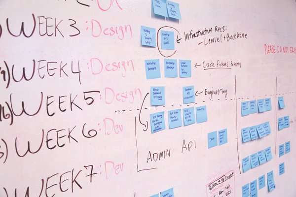

Current and Upcoming Projects
UX Research for a social media app for transgender people
- For a side project I am helping out with the UX research for an app made for people within the trans/non-binary community to connect. It's called TransTime. I am very excited about social media and how platforms may be more inclusive to greater audiences of people. I hope to assist with the project on a development side in the future.
Masculine of Center Gender Presentation as a Risk Factor for Experiencing Gender-Based Violence
- Continuing violence research with sexual and gender minority people, I am currently working on a publication that specifically looks as gender expression and gender identity as a risk factor for experiencing violence.
HIV prevention and treatment recommendations for clinicians working with transgender youth
- I am assisting with writing a book chapter for clinicians working with transgender youth and young adults.
Immigration and transgender identity
- I am doing a scoping review of all literature surrounding transgender or other gender minority identities and immigration status. We are focusing on the potential health effects that current policies have on transgender immigrants and people seeking asylum from Latin America.
Content themes within transgender/non-binary social media outlets
- As aforementioned, a large passion of mine is how minority communities use social media. Part of the research I do will continue with mixed methods analyses of content themes within social media outlets.
